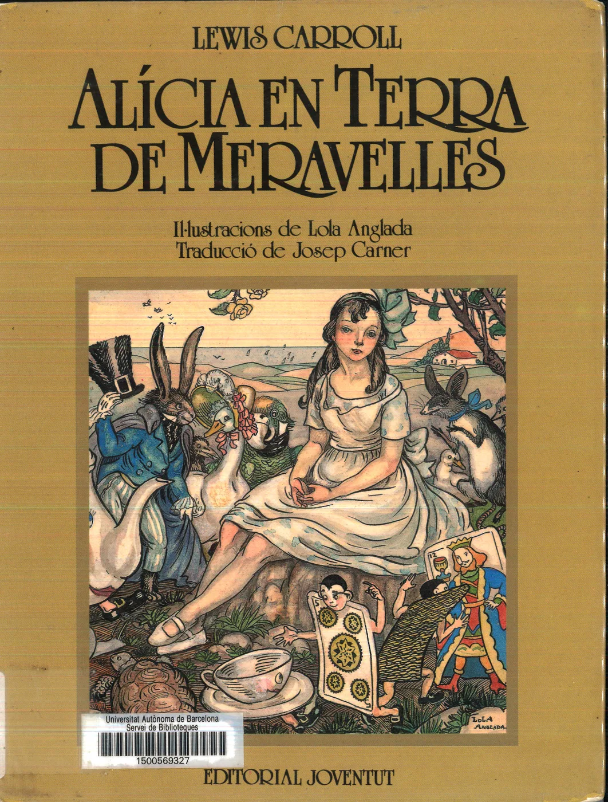
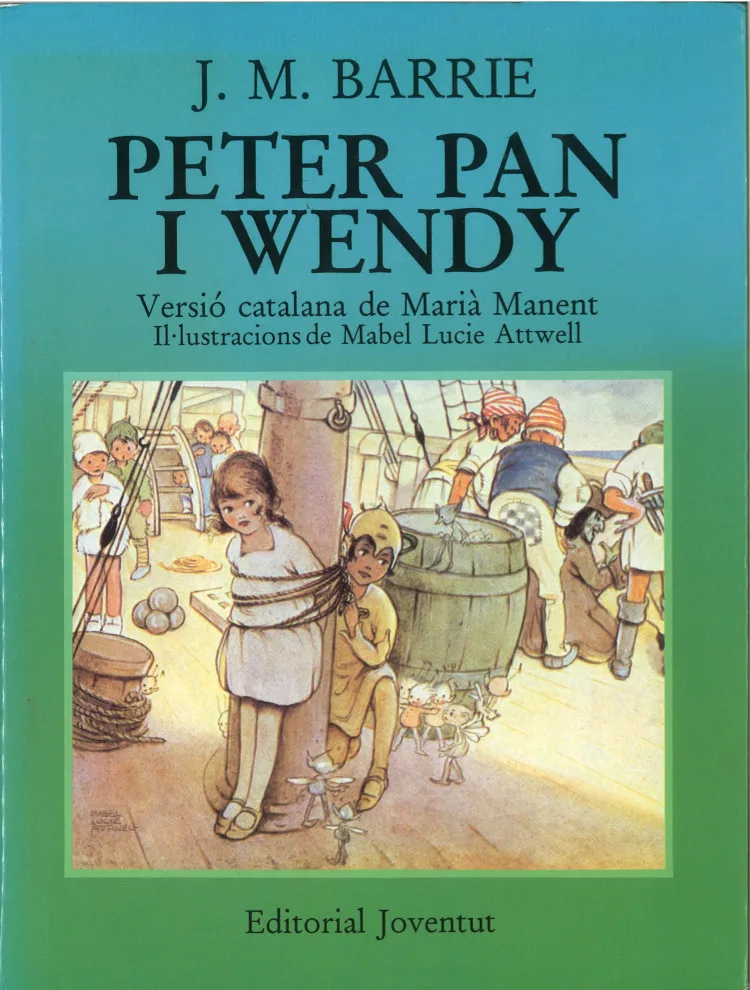
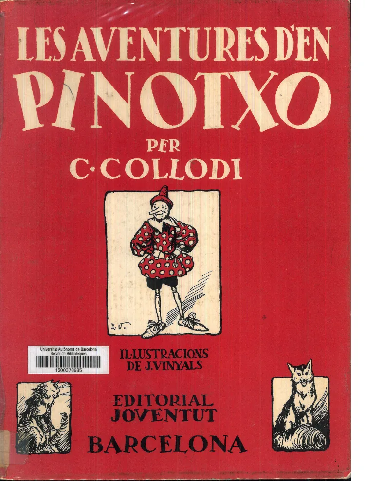

Pas 3. Traduccions i adaptacions
D’on ve, un llibre? A més dels originals, hi ha les traduccions d’altres llengües o les adaptacions per edats.
La qualitat de la traducció o l’adaptació importa: no val qualsevol versió
Per valorar-ho, pots fixar-te en aquests tres signes bàsics de fiabilitat:
L’edat dels destinataris és un factor determinant de les diferències entre versions
Els nivells de complexitat dels textos són diversos segons si es pensa en prelectors, lectors experts o alguna de les altres possibilitats del ventall intermedi. Però "pocs anys del lector" no hauria de ser sinònim de “poca qualitat”. Les primeres pàgines d’aquestes dues versions de Pinotxo destinades a primers lectors, i d’una mateixa editorial, il·lustren opcions prou diferents en aquest sentit. Fixa’t en les característiques de cadascuna:
Quines són les diferències que podem observar entre les dues versions? Desplega-les.
- En la versió 1 s’han reduït els fets i s’ha fet un resum incomplet de l’episodi essencial de l’inici de la història; s’ha escapçat la història, que comença amb Gepet, i se n’ha eliminat la part prèvia del mestre Cirera, que és clau per entendre que el titella cobrarà vida.
- En la versió 2, en canvi, els fets es presenten complets. És una adaptació assequible que també escurça l’original però manté l’essència del relat en tots els seus episodis; si al mestre Cirera el tronc li parla, té sentit que el titella que en fa Gepet cobri vida.
- En la versió 1, el text s’ha convertit en una frase o un simple resum sense cap de les virtuts estètiques de la llengua literària (no hi ha fórmula d’inici, no hi ha poeticitat, no hi ha diàlegs…).
- En la versió 2, s’ha fet una adaptació òptima en la mesura que el text és més curt però no renuncia a les propietats del llenguatge literari.
- En la versió 1, les imatges no estan en relació directa amb el text, simplement el complementen en la seva pobresa.
- En la versió 2, en canvi, les il·lustracions estan en relació directa amb el text, contribueixen a la narració (per exemple, es veu la sorpresa del mestre Cirera pel fet que el tronc parla).
A més dels signes de fiabilitat intrínsecs que hem vist, hi ha factors externs que ens poden ajudar a determinar la qualitat d’una traducció o adaptació. Un dels més rellevants són les editorials i les col·leccions de referència, que constitueixen una garantia en si mateixes. A mesura que les anem coneixent, anirem formant el nostre criteri.
Finalment, cal fer notar que les obres més versionades són els clàssics. Per tant, cal tenir molt en compte els criteris esmentats (qualitat i edat) en triar aquests textos.
Saps què és un clàssic?
Un clàssic és un llibre que mai no acaba de dir el que ha de dir.
Calvino, I. Por qué leer los clásicos. Barcelona: Tusquets, 1993.
Els clàssics són textos constantment reeditats i adaptats per edats, per gèneres i en èpoques diferents.
Segur que has vist i llegit múltiples versions d’aquestes històries:

Lewis Carrol, Alícia en Terra de Meravelles. Il·lustracions de Lola Anglada. Traducció de Josep Carner. Barcelona: Joventut, 1927

J. M. Barrie, Peter Pan i Wendy. Versió catalana de Marià Manent. Il·lustracions de Mabel Lucie Attwell. Barcelona: Joventut, 1935

Carlo Collodi, Les aventures d’en Pinotxo. Trad.: Maria Sandiumenge. Il·l.: J. Viñals. Barcelona: Joventut, 1934
Amb el desenvolupament actual de l’entorn digital, també estan sortint moltes versions en pantalla de clàssics infantils i juvenils. L’Alícia de Lewis Carroll n’és un bon exemple: objecte de nombroses edicions, traduccions i adaptacions des que es va publicar el 1865, ha estat portada al cinema per diferents directors i ara compta amb diverses aplicacions per a iPad (pots fer-ne una cerca a la xarxa per comprovar-ho).
Amplia
Avui dia disposem d’un cercador de clàssics sense drets d’autor en un dels espais definits de Google: Google Llibres (books.google.com). Hi trobaràs la presentació i tota la informació sobre el recurs.
{kind=link}
{kind=link}
{kind=link}
{kind=link}
{kind=link}